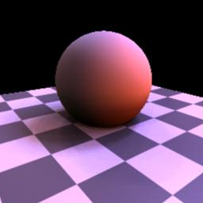

Fixed crashing bug with interleaved light maps (race condition identified by Manfred Ernst)
Fixed bug whereby low level light map would not be used for final gathering
Added tint parameter
Updated createSphericalLight to work with Maya 8.5 / mental ray 3.5.1.2
Version 5
Added mental ray style shadows
Version 4
Added second "low level" light map for use when trace depth exceeds a
specific level and/or when final gather rays are being evaluated
Version 3
Added Linux build
Added new compiler optimizations (win32)
Added occlusion for shadows option
Changed default for maxInterleavedShadowSamples to 64
Changed to only read light maps generated by the new version of
lightMapGen,
beta4. Not compatible with older
light map files.
Use light maps generated by lightMapGen in mental ray.
Please see the lightMapGen documentation for additional information.
Usage
See lightMapGen quick start.
Turn on "Info Messages" under the Translation tab of Render Global
Settings to see the sphericalLight diagnostic messages.
Example Results

Grace probe 128 samples 8sec
Grace probe 128 samples w/ final gathering 44sec
Grace probe 128 samples w/ final gathering using low map 8 samples 11sec
Notes
Light Map Orientation
The lightMap is situated at the origin and oriented such that the theta
angle (x-axis if generated from lightMapGen) begins at positive X and
rotates towards positive Z. The phi angle (y-axis if generated from
lightMapGen) is the vertical, beginning from positive Y. sphericalLight
obeys it's parent transform, so if you want a different orientation
than the one described simply rotate and translate as required.
Interleaved Sampling
Spherical light supports interleaved sampling of the shadow rays.
Making Shadows
Their may be some confusion as to what technique to use for shadows.
Besides simply switching on shadowing you can use these
two basic rules of thumb:
If you are using a light map with a low sample count, try using occlusion shadow sampling
If you find you want to increasing the samples in your lightmap
because of shadow artifacts, try
using
interleaved sampling. (e.g. rather than using a light map with
128 samples, try 32 samples with 4 interleave levels)
Final Gathering, Reflections and
Refractions
These computational expensive procedures can be sped up by using an
alternate "low level" light map. See the Level and Use Low Light Map for Final Gather parameters.
Parameters
Light Map Data File
Light map file.
Type
Spot Lights - treats each light map sample as emanating from a single
location (e.g. equivalent to spot or point lights)
Directional Lights - treats each light map sample as a light with
parallel rays
Intensity
Gain applied to light map samples.
Radius
World space size of the light map (sphere).
Shadows
None - no shadows will be calculated
Mental Ray - mental ray's standard shadowing will be used for each
sample
Occlusion - an occlusion call will be used for each sample with the
cone angle set to the size of the sample in the light map
Interleaved - a trace probe will be used for each interleaved sample
(i.e. multiple shadow rays for each sample), you must have an
interleaved light map for this to work
About Occlusion Shadows
When enabled an occlusion style algorithm is used for shadow testing.
The occlusion cone size (i.e. area above the shading sample to check
for
occlusion) is set to the solid angle of the current sample in the light
map. Useful to get soft shadows from light maps with low sample counts
but still have the shadow softness related to the light map. To
visualize this area you can pass the writeDiagImages
flag to lightMapGen. See the
lightMapGen documentation for more
information.
If occlusion shadows are enabled the interleave settings below are
ignored. Interleave samples are still used but may not be as
appropriate when using occlusion shadows.
Occlusion Shadow Samples
Number of occlusion samples. The occlusion shadow samples are divided
up between the light map samples, depending on a particular light map
samples area.
Occlusion Min Softness
Increase this value if you dont want any sharp shadows. 1 = full
hemispherical sampling.
Level
Operates the same as the Level parameter
for mental ray area lights. In the case of sphericalLight the Light Map File Low is used when the Level is triggered.
Use Low Light Map for Finalgather
When enabled the Light Map File Low
will be used for finalgather rays.
Shadows Low, Occlusion Shadow Samples
and Occlusion Min Softness Low
These params are the same as their non-Low counterparts but apply to
the low level lightmap Light Map File
Low
Max Interleaved Shadow Samples
This parameter can be used to restrict the number of shadow samples
when using an interleaved light map. E.g. if you load a map with 16
interleave levels but wish to use only 8.
Interleaved Shadow Sampling Type
When "Max Interleaved Shadow Samples" is less than the number of
interleaved samples in the currently load map, this parameter specifics
how to choose which "Max Interleaved Shadow Samples" are used.
0 - Random : chooses a random interleaved sample each time
1 - mental ray : uses mental ray's sampling engine to choose the
interleaved sample
Known Issues
when using occlusion or interleaved shadows objects must be visible
to raytracing for shadows to work
shadows calculations are not completely correct when using
directional (parallel)
light mode, objects outside the lights radius may unintentionally
occlude
does not work correctly with Maya materials, use mental ray
equivalents for now